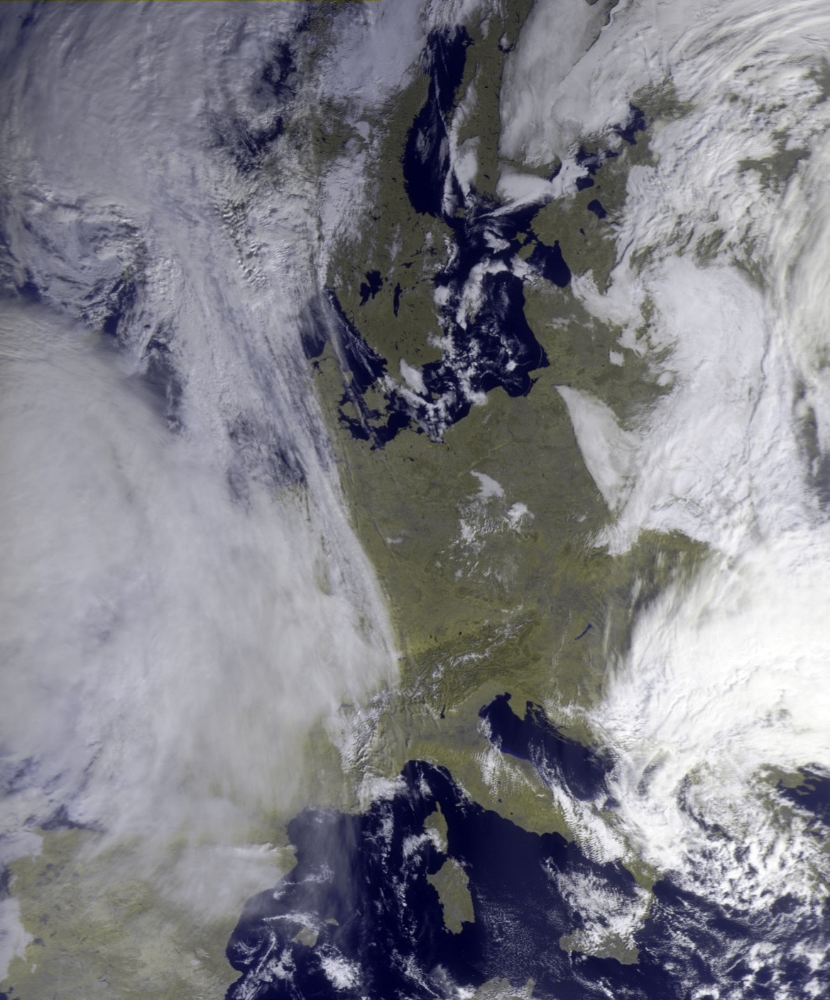
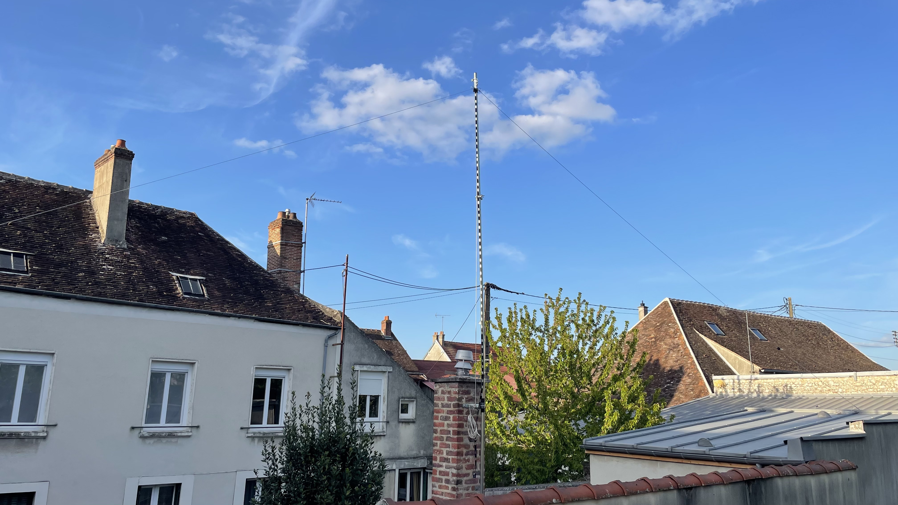
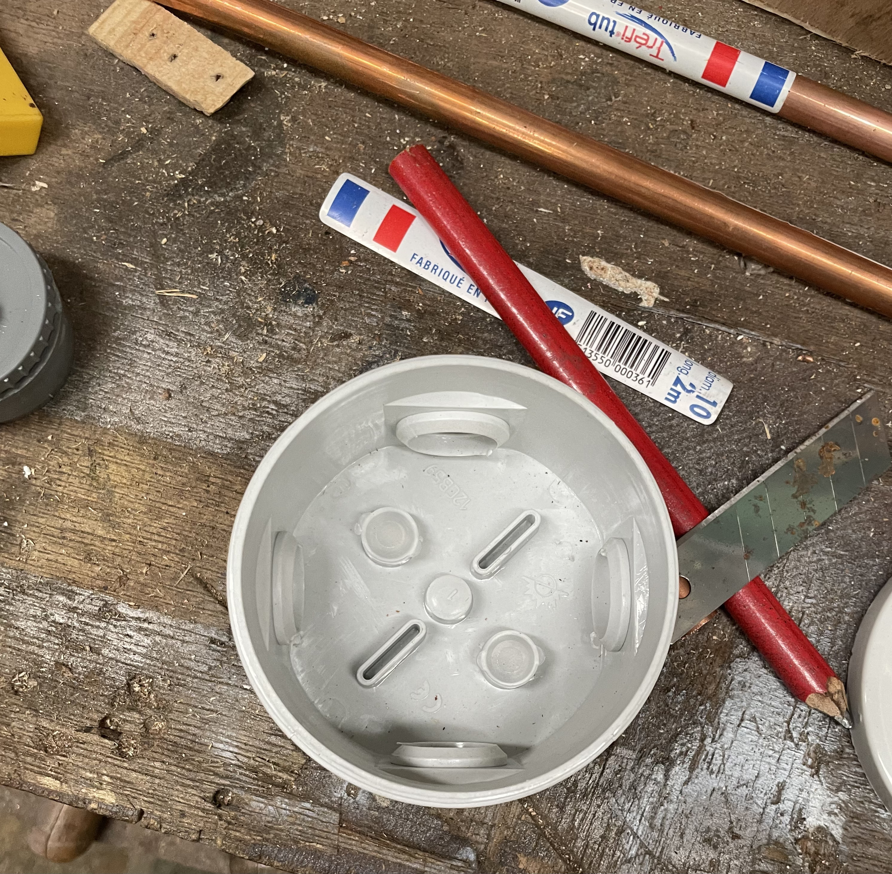

05 — PROJECTS
Engineering Projects

QFH Antenna
Design and construction of a satellite reception antenna.

METEOR Satellite
Receiving images directly from space.

OH/F4MYH Finland
HF operation from Northern Europe.
01 — ABOUT
I am a 17-year-old amateur radio operator passionate about HF communication, satellite reception and antenna engineering. Driven by curiosity and technology, I enjoy exploring radio, space communication and building my station step by step.
My goal is to experiment, learn and continuously improve my skills through new projects and on-air experiences.
📡 HF Operations
🛰 Satellite Reception
🌍 DX Communication
02 — CURRENT STATION
I am also using RemoteHamRadio (RHR) to expand my operating experience and improve my skills on HF.
Through RHR, I have access to high-performance remote stations located in low-noise environments, allowing me to:
This complements my personal station and helps me progress in amateur radio.
03 — JOURNEY
Receiving images from space using a QFH antenna.
Beginning of my radio adventure.
HF operation from Northern Europe.
04 — QSO NETWORK
QSO
DXCC
Longest DX
05 — PROJECTS
Design and construction of a satellite reception antenna.

Receiving images directly from space.
HF operation from Northern Europe.
06 — GALLERY



